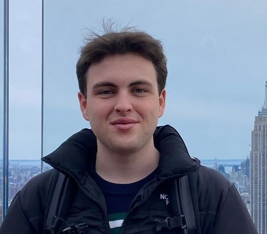

Guido Gonzalez
3D Rigger & Technical Director
Profile
Animation and VFX student at La Salle – Universitat Ramon Llull, passionate about character rigging and production pipelines. Skilled in Maya rigging with experience in student productions to build efficient, animator-friendly rigs. Strong background in Python scripting, tool creation, and workflow optimization. Enthusiastic about technical challenges and continuous learning.
Work Experience
- Character TD and Scripts Intern – La Salle URL (Sept 2025 – Present)
Assisted faculty in teaching advanced character rigging systems and animation-oriented scripting to upper-year students. Developed Python tools to streamline rig creation, automate repetitive tasks, and improve workflow efficiency. Helped define a standardized production pipeline using Prism Pipeline and supported complex rig setups. - Rigging TD, Pipeline and Scripts Intern – La Salle URL (Mar 2025 – Jul 2025)
Assisted in teaching core rigging systems to students, established standardized pipelines for projects, and provided technical troubleshooting support.
Project Experience
- Out Cold
– University project, La Salle URL (2025)
Rigging Lead for a short film, responsible for designing complex character rigs with advanced deformation systems. Developed multiple humanoid and quadruped rig variations to meet diverse animation requirements. Created custom Python tools to automate rigging tasks and streamline animator workflows. - Davi
– University project, La Salle URL (2025)
Rigging Lead for a short film, developing several humanoid rigs featuring facial systems and secondary motion setups. Enhanced rigging efficiency and consistency across different DCCs through Python-based automation. Supervised a small team of riggers, ensuring technical quality and delivery within tight production timelines. - Vampire Blues
– University project, La Salle URL (2025)
Responsible for the entire rigging pipeline of a short film, including characters and props. Developed a modular facial rig system enabling expressive performance and efficient lip-sync workflows. Built Python tools that integrated the facial system across multiple characters, allowing fast iterations and meeting project deadlines.
Education
- Bachelor of Animation and VFX – La Salle Universitat Ramon Llull (2022 – Present)
- Bachelor’s Degree in Multimedia Engineering – La Salle Universitat Ramon Llull (2021 – 2022)
Skills
- Rigging
- Python Scripting
- Pipeline Development
- Tool Creation
- Workflow Optimization
- Critical Thinking & Team Collaboration
Languages
- Spanish – Native
- Catalan – Native
- English – Fluent
Contact
- 📞 +34 633 600 986
- 📧 E-mail contact
- [in] LinkedIn
- 📍 Barcelona, Spain